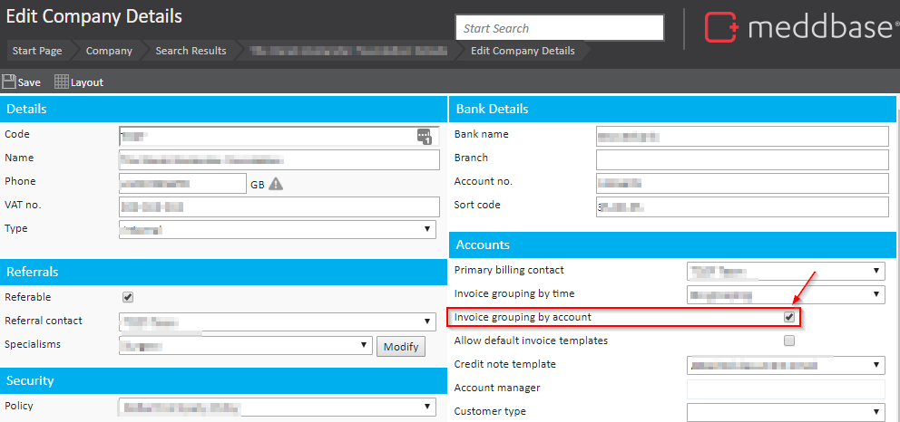
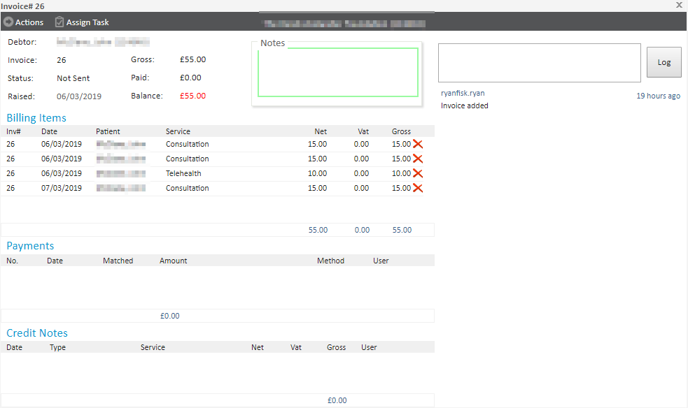

The purpose of this article is to explain how to group invoices by account.
This setting forces all Billing Items consumed by individual patients onto separate invoices per patient, e.g. 2 Self-Pay patients consuming 1 service each for 10 consecutive days will result in 2 invoices being raised (1 for each patient), with each invoice containing 10 billing items consumed by the respective patient.
It is possible to group unsent invoices for an account (a patient) into one invoice by enabling 'Invoice Grouping by Account'. This option can be enabled under:
Company > [Company/billing account name] > Company details

When Invoice Grouping by Account is enabled, each new invoice you try to generate for that account, will be wrapped up into the last unsent invoice for a specific patient.
Example below:

In this example, you can see that invoice #26 was raised on the 06/03/2019 for a Consultation, because the invoice was never sent, all subsequent appointments for the same patient have been wrapped up into the same invoice #26.
It is important to note that any unsent payments generated before Invoice Grouping by Account has been enabled, will not be grouped.
If invoice grouping is required but not specific to each patient account then the 'Invoice grouping by account' setting should not be ticked. The system will then group invoices by company and not be specific to each patient.